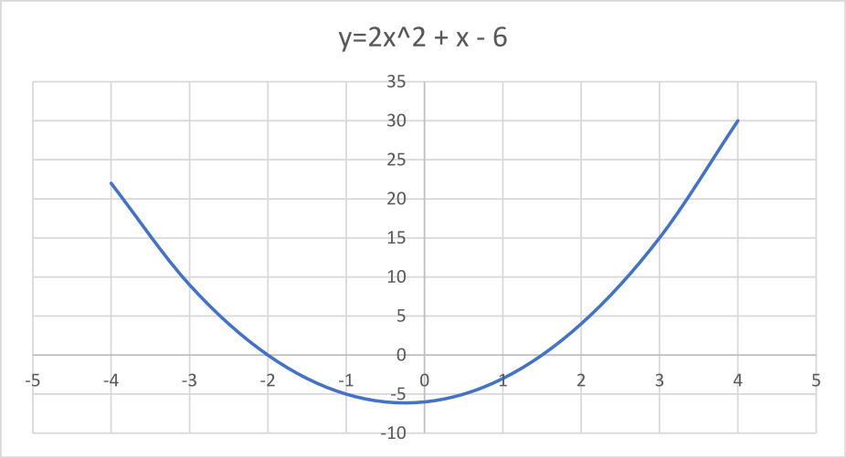
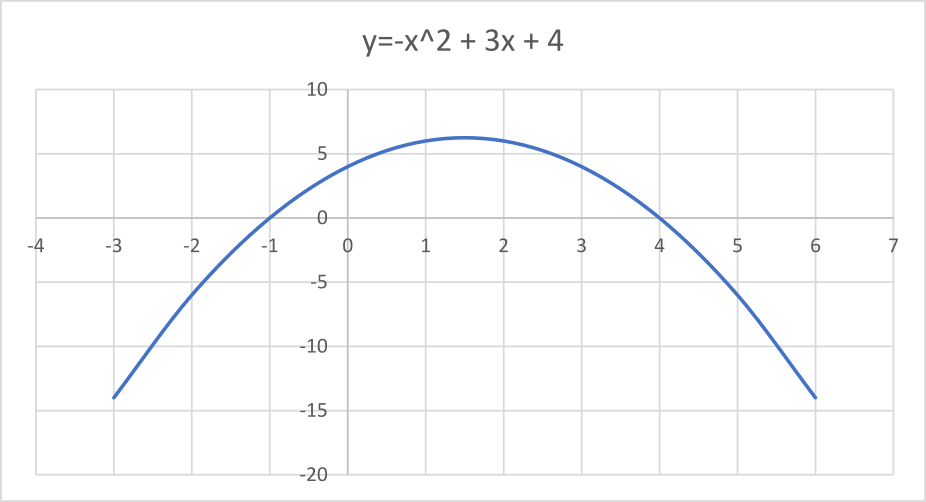
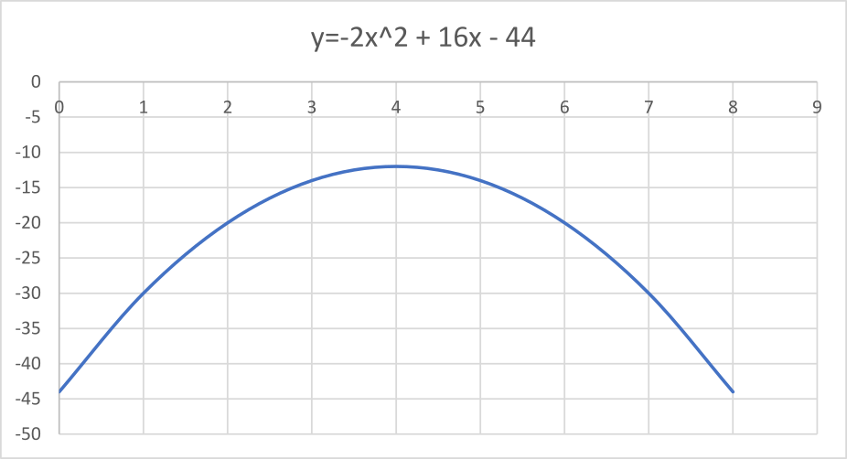
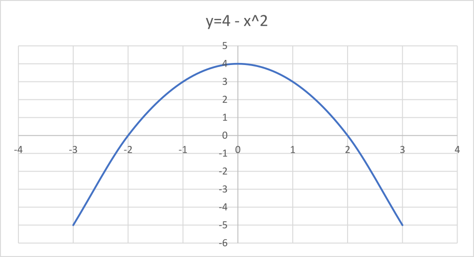
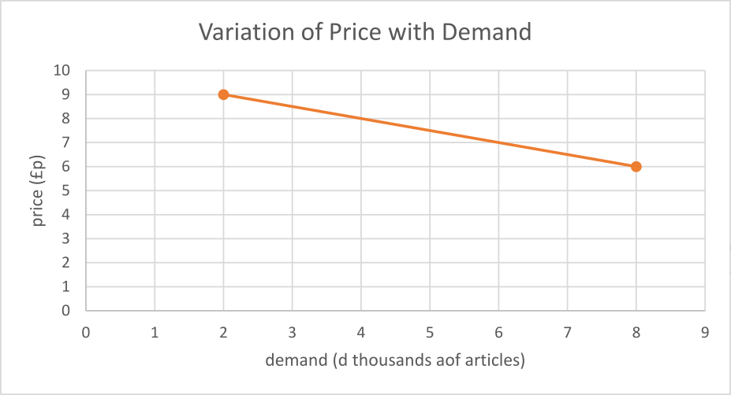
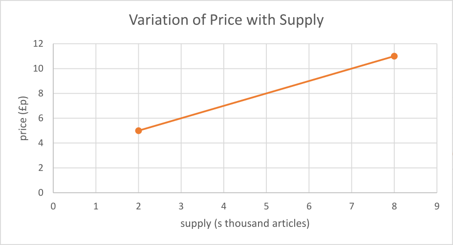
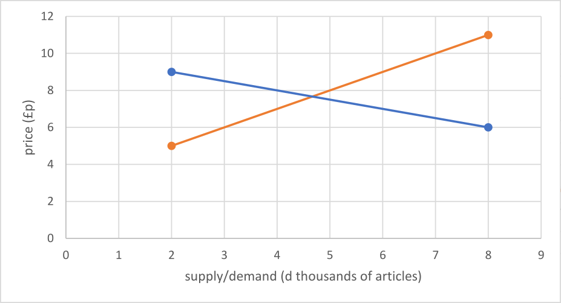
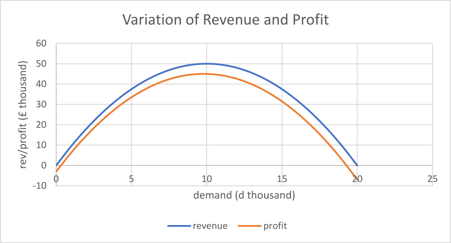

Quadratics
Quadratic Expressions, Graphs, and Equations
In mathematics we often encounter expressions of the form \(ax^2 + bx + c\). Because of the presence of the \(x^2\) term such expressions are called quadratic expressions. Here are some examples:
-
\(2x^2 + x - 6\),
-
\(x^2 - 4\),
-
\(-x^2 + 3x - 4\),
-
\(-2x^2 + 16x - 34\).
Their graphs are easily drawn, e.g., here is the graph of \(y = 2x^2 + x - 6\).

And here is the graph of \(y = -x^2 + 3x + 4\).

Here is the graph of \(y = -2x^2 + 16x - 44\).

And here is the graph of \(y = 4 - x^2\).

Each of these graphs has a ‘high point’ or ‘low point’, which is called the vertex of the graph. It is easy to distinguish between such points. Curves such as \(y = 2x^2 + x - 6\) and \(y = x^2 - 4\) curve upwards from their vertex and have a positive \(x^2\) coefficient whilst \(y = -x^2 + 3x - 4\) and \(y = -2x^2 + 16x - 44\) curve downwards from their vertices and have a negative \(x^2\) coefficient.
In addition some curves, like \(y = 2x^2 + x - 6\) and \(y = x^2 - 4\) intersect the \(x\)-axis whilst \(y = -2x^2 + 16x - 24\) lies wholly below the \(x\)-axis. If we drew the graph of \(y = x^2 + 4x + 10\) we would see that the curve lay wholly above the \(x\)-axis.
When a curve crosses the \(x\)-axis it is easy to calculate the position of its vertex. Take a look at the graph of \(y = x^2 - 4\). It crosses the \(x\)-axis at \(x = -2\) and \(x = 2\). By symmetry, the highest point is at the midpoint of that interval, i.e., \(x = 0\). At this value of \(x\) the value of \(y\) is \(4\). This is its maximum value. If we look at the curve \(y = 2x^2 + x - 6\), it crosses the \(x\)-axis at \(x = -2\) and \(x=1.5\). The middle of this interval is \(x = -0.25\). So the value of \(y\) is \(2 \times (-0.5)^2 + (-0.25) - 6 = -6.125\).
Calculating Crossing Points
Consider the curve \(y=x^2 - 4\). Let us suppose we wish to calculate the points where the curve crosses the \(x\)-axis. This is where \(y=0\). Replacing \(y\) by \(0\) gives the equation \(x^2 - 4 = 0\). This is an example of a quadratic equation. The highest power of \(x\) is \(2\). To solve the equation we look to factorise the left-hand side. Thus
\[ x^2 - 4 = (x-2)(x+2) \]so the equation becomes
\[ (x-2)(x+4) = 0. \]This leads to \(x-2 = 0\), i.e., \(x=2\), or \(x+2 = 0\), i.e., \(x=-2\). We conclude that the curve crosses the \(x\)-axis at \(x=2\) and at \(x=-2\).
We can do the same sort of thing with \(y=2x^2 +x - 6\). To find the places where the curve crosses the \(x\)-axis we substitute \(y=0\) in the equation to get
\[ 2x^2 + x - 6 = 0. \]Factorising the left-hand side gives
\[ (2x - 3)(x + 2) = 0 \]which leads to \(2x - 3 = 0\), i.e., \(x = \frac{3}{2}\), or \(x + 2 = 0\), i.e., \(x = -2\). We conclude that the curve crosses the \(x\)-axis at \(x = \frac{3}{2}\) and at \(x = -2\).
The Quadratic Formula
It is not always possible to factorise a quadratic expression using integer numbers. In such a case it is possible to use a simple formula.
If we have an equation of the form \(ax^2 + bx + c = 0\), then its solutions are given by
\[ x= \frac{-b \pm \sqrt{b^2 - 4ac}}{2a}. \]For example, consider the equation \(3x^2 + 4x - 1 = 0\). Here \(a = 3\), \(b = 4\), and \(c = -1\). Substituting these values in the quadratic formula gives
This gives \(x = -1.5489\) and \(x = 0.21525\) (correct to \(2\) d.p.).
A Modelling Problem
The price at which a company sells a particular article varies with the quantity it sells. If the demand is 2000 articles it will charge \(\pounds 9\) per article, if it sells 8000 articles it will charge \(\pounds 6\) per article. Let the demand for the articles the company sells be denoted by the variable \(d\) (measured in thousands of articles) and let the price be \(\pounds p\).
Construct a set of axes with \(d\) as the horizontal axis and \(p\) as the vertical axis. Plot the points \((2, 9)\) and \((8, 6)\) with respect to these axes and show that the straight line joining these points has equation \(p = 10 - 0.5d\).
First of all, put this information on a graph to illustrate the situation. Pictures are often a good first step in mathematical problem solving. The picture below is an Excel chart showing the variation of price with demand as a linear function.

The equation of the line joining \((2,9)\) to \((8,6)\) is \(p = md + c\). The gradient \(m\) is given by
\[ m = \frac{6 - 9}{8 - 2} = \frac{-3}{6} = -\frac{1}{2}. \]The equation is thus
\[ p = -\frac{1}{2}d + c. \]To find the constant \(c\) we note that the line goes through the point \((2,9)\). Substituting in the equation we have
\[ 9 = -\frac{1}{2} \times 2 + c \]which yields \(c = 10\). The relationship between demand and price is thus
\[ p = -\frac{1}{2}d + 10. \]Now consider the following information. The company decides that it is worthwhile to increase the supply of such articles as the price increases. If the price is \(\pounds 5\) it is prepared to supply 2000 articles, at a price of \(\pounds 11\) it is prepared to supply 8000 articles. Let the supply of articles by the company be denoted by the variable \(s\) (measure in thousands of articles). Construct a set of axes with \(s\) as the horizontal axis and \(p\) as the vertical axis. Plot the points \((2,5)\) and \((8,11)\) with respect to these axes. Find the equation of the straight line joining these points.
We proceed in exactly the same way as before, plotting the two points and joining them with a straight line.

The equation of the line joining \((2,5)\) to \((8,11)\) is \(p = ms + c\). The gradient \(m\) is given by
\[ m = \frac{11 - 5}{8 - 2} = \frac{6}{6} = 1. \]The equation is thus
\[ p = s + c. \]To find the constant \(c\) we note that the line goes through the point \((2,5)\). Substituting in the equation we have
\[ 5 = 2 + c \]which yields \(c = 3\). The relationship between demand and price is thus
\[ p = s + 3. \]We note that the demand rises as the price falls. On the other hand, as the price rises more is supplied. Combining the graphs for price/demand and price/supply gives the picture below. As the demand grows the price falls. However, as the price falls the manufacturer finds it less worthwhile to supply articles and there is a shortage of articles, i.e., demands exceeds supply. If the price is too high, whilst the manufacturer is ready to supply, the demand has dropped and supply exceeds demand. There is a price, called the equilibrium price, where supply matches demand. This price is represented by the crossing point of the two straight lines in the diagram below. The crossing point, sometimes called the equilibrium point, may be calculated algebraically.

When supply matches demand, \(s = d\). So the previous expressions for supply and demand yield
\[ p = -\frac{1}{2}d + 10 = d + 3. \]Simplifying yields
\[ -\frac{3}{2}d = -7 \]and so \(d = 7 \times \frac{3}{2} = 4.6667\) (4 d.p.). We conclude that the supply matches the demand when the price is \(\pounds 7.70\) and the demand is about \(4700\) articles.
We now consider the cost of manufacturing the articles. Suppose that the relationship between price and demand is still \(p = 10 - \frac{1}{2}d\) and that the cost \(\pounds C\) thousand of manufacturing \(d\) thousand is given by \(C = 3 + 0.2d\). The revenue \(\pounds R\) thousands accruing from selling \(d\) thousand articles is calculated by:
\[ \mbox{revenue } = \mbox{ articles sold } \times \mbox{ price of article }. \]The profit \(\pounds N\) thousand from such sales is given by
\[ \mbox{profit } = \mbox{ revenue } - \mbox{ cost of manufacturing }. \]We can translate the above statements into algebra. We have
\[ R = dp \]and
\[ N = R - C. \]We can express these equations wholly in terms of \(d\):
\[ R = d(10 - \frac{1}{2}d) = 10d - \frac{1}{2}d^2 \]and
\[ N = 10d - \frac{1}{2}d^2 - (3 + 0.2d) = -3 + 9.8d - 0.5d^2. \]In summary, we have expressions for the revenue \(R\), and profit \(N\), in terms of the demand \(d\), as
\[ R = 10d - \frac{1}{2}d^2 \]and
\[ N = -3 + 9.8d - 0.5d^2. \]A sketch of both revenue and profit is given below.

Note that the revenue is always positive. The profit is not though. If the demand is close to 20 or to 0 the profit becomes negative, i.e., the costs outweigh the revenue. We can find the values of \(d\) when this happens. The profit is given by
\[ N = -3 + 9.8d - 0.5d^2 \]and so when \(N = 0\) we have \(-3 + 9.8d - 0.5d^2 = 0\). Rearranging gives
\[ 0.5d^2 - 9.8d + 3 = 0. \]Solving gives
\[ d = \frac{-(-9.8) \pm \sqrt{(-9.8)^2 - 4(0.5)(3)}}{2(0.5)} = \frac{9.8 \pm \sqrt{90.04}}{1} = 9.8 \pm 9.4889. \]So \(d = 0.3111\) or \(d = 19.2889\). In other words, the profit stays positive if the demand lies between 311 and 19299, otherwise the production costs outweigh the revenue.